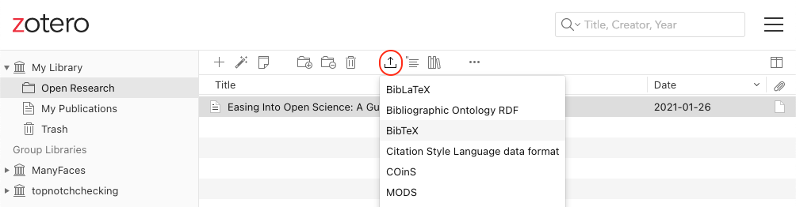

Appendix B — Advanced: Referencing
B.1 Bibliography
There are several ways to do in-text references and automatically generate a bibliography in quarto. Quarto files need to link to a BibTex or JSON file (a plain text file with references in a specific format) that contains the references you need to cite. You specify the name of this file in the YAML header, like bibliography: refs.bib and cite references in text using an at symbol and a shortname, like [@tidyverse]. You can also include a Citation Style Language (.csl) file to format your references in, for example, APA style.
B.1.1 Converting from reference software
Most reference software like EndNote or Zotero has exporting options that can export to BibTeX format. You just need to check the shortnames in the resulting file.
Warning
Please start using a reference manager consistently through your research career. It will make your life so much easier. Zotero is probably the best one.
- If you don’t already have one, set up a Zotero account
- Add the connector for your web browser (if you’re on a computer you can add browser extensions to)
- Navigate to Easing Into Open Science and add this reference to your library with the browser connector
- Go to your library and make a new collection called “Open Research” (click on the + icon after
My Library)
- Drag the reference to Easing Into Open Science into this collection
- Export this collection as BibTex
The exported file should look like this:
@article{kathawalla_easing_2021,
title = {Easing {Into} {Open} {Science}: {A} {Guide} for {Graduate} {Students} and {Their} {Advisors}},
volume = {7},
issn = {2474-7394},
shorttitle = {Easing {Into} {Open} {Science}},
url = {https://doi.org/10.1525/collabra.18684},
doi = {10.1525/collabra.18684},
abstract = {This article provides a roadmap to assist graduate students and their advisors to engage in open science practices. We suggest eight open science practices that novice graduate students could begin adopting today. The topics we cover include journal clubs, project workflow, preprints, reproducible code, data sharing, transparent writing, preregistration, and registered reports. To address concerns about not knowing how to engage in open science practices, we provide a difficulty rating of each behavior (easy, medium, difficult), present them in order of suggested adoption, and follow the format of what, why, how, and worries. We give graduate students ideas on how to approach conversations with their advisors/collaborators, ideas on how to integrate open science practices within the graduate school framework, and specific resources on how to engage with each behavior. We emphasize that engaging in open science behaviors need not be an all or nothing approach, but rather graduate students can engage with any number of the behaviors outlined.},
number = {1},
urldate = {2022-09-07},
journal = {Collabra: Psychology},
author = {Kathawalla, Ummul-Kiram and Silverstein, Priya and Syed, Moin},
month = jan,
year = {2021},
pages = {18684},
}B.1.2 Creating a BibTeX File
You can also add references manually.
In RStudio, go to File > New File... > Text File and save the file as “refs.bib”.
Add the line bibliography: refs.bib to your YAML header.
B.1.3 Adding references
You can add references to a journal article in the following format:
@article{shortname,
author = {Author One and Author Two and Author Three},
title = {Paper Title},
journal = {Journal Title},
volume = {vol},
number = {issue},
pages = {startpage--endpage},
year = {year},
doi = {doi}
}See A complete guide to the BibTeX format for instructions on citing books, technical reports, and more.
You can get the reference for an R package using the functions citation() and toBibtex(). You can paste the bibtex entry into your bibliography.bib file. Make sure to add a short name (e.g., “ggplot2”) before the first comma to refer to the reference.
@Book{,
author = {Hadley Wickham},
title = {ggplot2: Elegant Graphics for Data Analysis},
publisher = {Springer-Verlag New York},
year = {2016},
isbn = {978-3-319-24277-4},
url = {https://ggplot2.tidyverse.org},
}Google Scholar entries have a BibTeX citation option. This is usually the easiest way to get the relevant values if you can’t add a citation through the Zotero browser connector, although you have to add the DOI yourself. You can keep the suggested shortname or change it to something that makes more sense to you.

B.1.4 Citing references
You can cite references in text like this:
This tutorial uses several R packages (Allaire et al., 2018; Wickham, 2017).
Put a minus in front of the @ if you just want the year:
Kathawalla and colleagues (2021) explain how to introduce open research practices into your postgraduate studies.
B.1.5 Uncited references
If you want to add an item to the reference section without citing, it, add it to the YAML header like this:
nocite: |
@kathawalla_easing_2021, @broman2018data, @nordmann2022dataOr add all of the items in the .bib file like this:
nocite: '@*'B.1.6 Citation Styles
You can search a list of style files for various journals and download a file that will format your bibliography for a specific journal’s style. You’ll need to add the line csl: filename.csl to your YAML header.
Download the apa.csl file for APA style citations.
Add some citations to your refs.bib file, reference them in your text, and render your manuscript to see the automatically generated reference section. Try a few different citation style files.
B.1.7 Reference Section
By default, the reference section is added to the end of the document. If you want to change the position (e.g., to add figures and tables after the references), include the following where you want the references:
Add in-text citations and a reference list to your report.
Allaire, J., Xie, Y., McPherson, J., Luraschi, J., Ushey, K., Atkins,
A., Wickham, H., Cheng, J., & Chang, W. (2018). Rmarkdown:
Dynamic documents for r. https://CRAN.R-project.org/package=rmarkdown
DeBruine, L., & Barr, D. (2020). Data skills for reproducible
research. Zenodo. https://doi.org/10.5281/zenodo.3564348
Kathawalla, U.-K., Silverstein, P., & Syed, M. (2021). Easing into
open science: A guide for graduate students and their advisors.
Collabra: Psychology, 7(1). https://doi.org/10.1525/collabra.18684
Nordmann, E., McAleer, P., Toivo, W., Paterson, H., & DeBruine, L.
M. (2021). Data visualisation using R, for researchers
who don’t use R. PsyArXiv. https://doi.org/10.31234/osf.io/4huvw
R Core Team. (2023). R: A language and environment for statistical
computing. R Foundation for Statistical Computing. https://www.R-project.org/
Wickham, H. (2017). Tidyverse: Easily install and load the
’tidyverse’. https://CRAN.R-project.org/package=tidyverse
Xie, Y. (2025). Tinytex: Helper functions to install and maintain
TeX live, and compile LaTeX documents. https://github.com/rstudio/tinytex